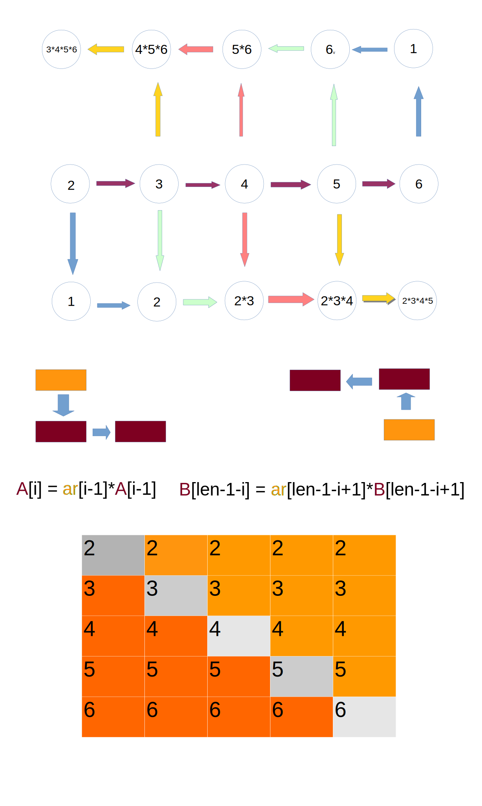

Let's understand the question first
Given an array [2, 3, 4], and you need to product an array [3*4, 2*4, 2*3] => [12, 8, 6]
In other words, current element is removed and multiply the rest of elements.
It is easy to use two loops to solve the problem, but the runtime is
$\mathcal{O}(n^2)$
How to solve the problem with runtime
$\mathcal{O}(n)$, but you can allow to use space
$\mathcal{O}(n)$
Here is the trick with dynamic programming.

/**
* Multiple all the integers except the current one
* No Division is allowed
* Runtime is O(n)
* [2, 3, 4] => [3*4, 2*4, 2*3] => [12, 8, 6]
*/
public static int[] multiple(int[] arr){
if (arr == null){
throw new IllegalArgumentException("arr must not be null.");
}else{
int len = arr.length;
int[] arr1 = new int[len];
int[] arr2 = new int[len];
if(len > 1){
arr1[0] = arr2[len-1] = 1;
for(int i=1; i < len; i++){
arr1[i] = arr[i-1]*arr1[i-1];
arr2[len-1 - i] = arr[len-i]*arr2[len-i];
}
for(int i=0; i < len; i++)
arr1[i] = arr1[i]*arr2[i];
}
return arr1;
}
}